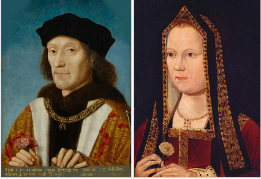
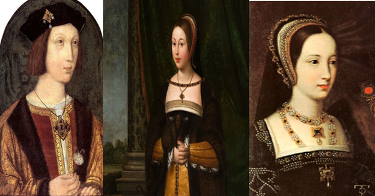
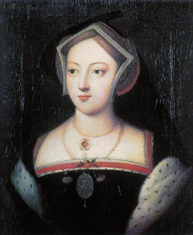

Timeline
Childhood: 1491 - 1509
1491: Born in Greenwich Palace, Kent, England on June 28th to King Henry VII and Elizabeth of York.
He was preceeded by his older brother Arthur, Prince of Wales (heir to the throne) in 1486, his older sister Margaret in 1489, and younger sister Mary in 1496.


1491 - 1501 - Early Childhood: He was given a well-rounded education fit for his royal status, and tutored in many subjects common to the time: classical literature (Greek and Latin), math, theology, Latin, French, and Italian. He was also taught pastimes that were appropriate for a prince: fencing, horsemanship, archery, jousting, and tennis. As per his father's wishes, he spent most of his childhood isolated in the royal palaces with only his tutors for company. This was due to Henry VII having lost three sons (Arthur, and two boys who did very young) so he tended to be a bit overprotective towards his remaining son.
1501: Arthur marries Princess Katherine of Aragon (daughter of the King and Queen of Spain) as pre-arranged by the couple's parents, for a political alliance between Spain and England.
1502: After less than 6 months of marriage, Arthur dies at 15 after getting sick (possibly of TB). Henry at 10, is now the heir to the throne.
February 1503: Henry's mother dies in childbirth leaving the 11 year-old Henry in deep grief.
June 1503: After much negotiations with Katherine's parents, Henry VII agrees to a treaty with them where Katherine is now to marry the younger Henry in 1505 when he is 14 (of marriagable age in the 1500s as Katherine was older - 16, as she was originally married to his older brother) in order to preserve the alliance. Katherine is to stay in England until then, not returing home to Spain. As per the religious tradition of the time, as Arthur and Henry are brothers, Katherine cannot marry Henry, as they are within a forbidden degree of affinity for re-marriages. This was solved with a papal dispensation allowing them to marry obtained by Henry VII, doubtless with the help of some financial incentives.
1505: Henry now 14, is told by his father to wait to marry Katherine, as her father has not paid the agreed upon dowry, so Henry VII was now looking for better potential matches for his son.
Early Reign and First Marriage: 1509 - 1525
April 22nd, 1509: Henry VII dies, and his son Henry becomes Henry VIII at 17. His paternal grandmother: Lady Margaret Beaufort, is made regent until Henry's 18th birthday two months later. She died the day after his birthday.
June 11th, 1509: Despite his father's wishes, Henry and Katherine had always been affectionate to and cared about each other, so he decides to marry her, making her Queen of England.
June 24th, 1509: Joint corronation of Henry and Katherine at Westminster Abbey.

January 1st, 1511: Katherine gives birth to a son: Henry. He dies on February 22nd, when his parents are still hosting jousting tournaments and parties celebrating his birth. Katherine would go on to have stillborn children after this in 1513, 1514, and 1518, and one before this in 1510.
Summer 1513: Henry invades France (England's traditional enemy at the time) and captures the towns of Thérouanne and Tournai.
September 9th, 1513: King James IV of Scotland (Henry's brother-in-law - he was married to his sister Margaret) invades England but is defeated at the Battle of Flodden. He dies in battle.
February 18th, 1516: Birth of Katherine and Henry's only surviving child: Mary - later Queen Mary I.

June 15th, 1519: Henry's mistress Elizabeth Blount gives birth to a son named Henry FitzRoy. He is given that name as it is medieval French for son of the king. Henry VIII used the name to emphasize to the fact that he finally had a longed for son. (Unfortunately, as England at the time had male preference primogeniture for the royal succession, sons were preferred.)

1520: Henry begins an affair with Mary Boleyn; sister to Anne (his future wife).

June 7th - 25th, 1520: Field of the Cloth of Gold - in the French countryside, tents made from cloth of gold were made and the French and English courts were there to celebrate the signing of a treaty of peace between France and England. King Francis I of France and Henry VIII led the festivities which included jousting and banqueting among others.

May 17th 1521: Henry has the Duke of Buckingham beheaded, as the Duke being a rival claimant to the throne was plotting to assassinate him and declare himself king.

July 1521: Henry publishes the treatise: A Defense of the Seven Sacraments Against Martin Luther. Martin Luther, a monk, was the founder of Protestantism in 1517 in Wittenberg (what is now modern day Germany). By 1521, Protestantism had come to England, and Henry, then a Catholic, wanted to assure that the religion didn't take hold in his country. The Pope rewarded him by giving him the title: Defender of the Faith (a title the British royals passed to each successive monarch since then). This is ironic, as Henry would later inadvertantly start the process to convert England to Protestantism, so he could divorce Katherine of Aragon and marry Anne Boleyn.

June 18th, 1525: As Henry VIII still didn't have any legitimate sons, Henry FitzRoy is now made Duke of Richmond and Somerset and given lesser noble titles.
Divorce From Katherine of Aragon and Marriage to Anne Boleyn: 1526 - 1536
Spring 1526: Henry starts an affair with Lady Anne Boleyn. She is the younger sister of his former mistress Mary Boleyn, and also a lady in waiting to Katherine of Aragon. Henry was attracted to her, due to her intelligence, wit, love of art and music, and fashion sense. He asked her to be his only mistress and she refused, asking to be his wife instead.

1527-8: As Henry's desire to marry Anne and their affair is made public, the court starts paying tribute to her, and Katherine is left out. Henry uses the excuse that the Pope had no legal basis to give him a dispensation to allow him to marry Katherine, as she was his brother's widow. Henry says that as there is a biblical passage against that, the pope had no authority to contravene it.
May 31st - July 23rd 1529: Henry is able to get the Pope to send a papal legate to London to try his divorce case based on his claim that the Pope wasn't allowed to issue the dispensation. The legate: Cardinal Campeggio sets up a tribunal and listens to both sides of the argument. However, he is instructed by the Pope to recall the trial back to Rome, as Campeggio says that it can only be heard by the Pope. The reason for this is the Pope was under pressure from Holy Roman Emperor and King of Spain Charles V, also Katherine's nephew, not to allow the divorce to proceed.

February 7th, 1531: Henry, tired of waiting for the Pope's decision, and fearing that it will be against him, decides to take matters into his own hands. He calls the British clergy into the halls of Parliament and asks them to acknowledge him as the supreme head of the Church of England, refusing the Pope any authority over the English church. They grant him this on 11th.
July 14th, 1531: Henry banishes Katherine from court and sends her to live in his lesser castles. He is now seen at all court/social events with Anne Boleyn and not Katherine.

August 22, 1532: Archishop Warham of Canterbury, the head of the English church and a religious conservative, dies, as is replaced by Henry with Thomas Cramner, a liberal cleric who supports and can grant the King's divorce.

September 1st, 1532: Henry now makes Anne Marquess of Pembroke, giving her a higher noble rank, so when he marries her, it would be considered a marriage of royalty and someone of an acceptable (high) noble rank.
January 25, 1533: Anne realizes that she is pregnant, and that is used as a reason to conduct a secret wedding between her and Henry. Accoring to the law about royal succession (it still applies to the royal family today), all royal children must be conceived in wedlock to be able to succeed to the throne; that's why the marriage was kept a secret.
April 9th, 1533: Katherine is informed by Henry's messengers that she is no longer Queen, and can only call herself Dowager Princess of Wales (as she was Arthur's widow).
April 12th, 1533: Anne now appears in court as Queen and on the next day, Easter, she is publicly declared Queen in all the churches in England.

May 23rd, 1533: Cranmer after convening an ecclesistical court, declares Henry's marriage to Katherine "null and void", due to Henry's original argument that the Pope didn't have the authority to grant the dispensation allowing Henry to marry Katherine after she had previously married his brother.
May 28th, 1533: Cranmer now pronounces Henry's marriage to Anne as "good and valid" legitimizing her position as Queen, and her soon to be child with Henry would now be considered legitimate and as a heir to the throne.
June 1st, 1533: Anne is crowned Queen of England.
September 7th, 1533: Birth of Henry and Anne's daughter: Elizabeth - the future Elizabeth I.

October 1st, 1533: Henry's other daugher Mary is informed that she is no longer a princess, and in December, is sent to server as a lady in waiting to her half sister Elizabeth.
March 23rd, 1534: Parliament passes the Act of Succession, saying that only children born to Henry and Anne would be eligible to be heirs to the throne. It also says that anyone denying that Anne and Henry were legally married, or that she was legally Queen of England, or that Henry was now the head of the Church of England, would be committing treason and subject to execution. This results in quite a few people refusing to take the oath, and being subsequently beheaded. On the same day, the Pope declares Henry's marriage to Katherine and their children legitimate and orders him to banish Anne from court and reinstate Katherine in her place under pain of Henry's excommunication. Henry refuses, thus reinforcing the permanent break of the English Church from Rome (as is still the case today).
July 1534 and June 1535: Anne miscarries children.
October 1535: Henry starts having an affair with Jane Seymour - one of Anne's ladies in waiting.

January 7th, 1536: Katherine dies of heart cancer. Henry and Anne dress in mourning clothes, but have a banquet on the same day, knowing they are free from the threat of Charles V invading England and restoring his aunt Katherine to the throne.
January 29th, 1536: Katherine is buried in Peterborough Cathedral. Anne walks in on Jane sitting on the lap of Henry, and this causes her to miscarries the baby boy she was pregnant with.
May 2nd, 1536 Henry angry at Anne's lack of male heirs and wanting an excuse to be rid of her and marry Jane, has his chief advisor, Thomas Cromwell, arrest Anne and accuses her of adultery with five men (one, her own brother) while married to him. If found guilty, the would be guilty of treason, and the penalty for that was death. (The charges were in future decades proved false.) The five men are also arrested. Anne and the men are brought as prisoners to the Tower of London.
May 12th - 15th, 1536: Anne and the five men are all given show trials with a forgone conclusion and declared guilty. They are beheaded on May 17th and May 19th. On the 17th, Anne's marriage was declared null and void, and Elizabeth was declared illegitimate. She is buried at the chapel of St. Peter Ad Vicula in the Tower of London.

Third Marriage to Jane Seymour and Religious Reforms 1536-7:
May 30th, 1536: Jane and Henry are married and she is proclaimed Queen on June 4th. He decides not to proceed with a coronation, as there is plague in London, and also, because it is thought that he wants to wait until she gives him a son first.

June 8th, 1536: Second Act of Succession - saying that Henry's children with Anne Boleyn and Katherine of Aragon were illegitimate, and any heirs to the throne would come from children he had with Jane Seymour.
June 13th, 1536: Mary, Henry's older daughter, realizing that now that her mother is gone, Charles V is not interested in invading England to defend her right to the throne, finally signs her agreement to the Second Act of Succession, agreeing that her parents marriage was invalid, and she is therefore illegitimate.
July 1536: 10 Articles - the leading bishops of the Church of England adopt these articles that lead the church doctrine in a slightly more Protestant direction.
July 22nd, 1536: Henry's illegitimate son, Henry FitzRoy dies at 17 without children, putting an end to the speculation that Henry VIII could get Parliament to declare him as his heir if he didn't have any legitimate sons.
1536 - 1540: The dissolution of the monasteries - as the English church was no longer under the Pope, Henry ordered the closing of all Catholic monasteries in England and their revenue was brought to the crown.
October - March 1537: Pilgrimage of Grace - a rebellion led by the lawyer Robert Aske comprising the northern counties of England that were largely Catholic leaning, and demanded a restoration of the monasteries and the revocation of the 10 Articles. It was brutally put down by Henry's troops, and Aske and its leaders were publicly executed.
October 12th, 1537: After 3 days of labor, Jane delivers a son - Edward - the future Edward VI. Church bells are rung and bonfires lit in London to celebrate.

October 24th, 1537: Jane dies of an infection acquired during childbirth and is buried on November 12th in Winsdor Castle. Henry goes in seclusion mourning her between her death and her funeral, and puts his court into official mourning for her until February 1538.
Widower and Fourth Marriage to Anne of Cleves 1538 - 1540:
1538: As Henry had only one surviving son, and there was a high rate of disease at the time, there was no guarantees that Edward would live to inherit the throne after him. No one knew this better than Henry himself who had a son die at 17, and a brother at 15 that caused him to inherit the throne. Therefore, Henry's chief minister and advisor Thomas Cromwell asked him if he could start to look for another wife for him. Henry agreed.

Treaty of Toledo January 12th, 1539: France and Spain make a treaty with each other, and agree that each of them should not make any new alliances with other countries for ten years without the other signer's consent. This leaves England isolated and without allies in case France or Spain decides to invade it. Therefore to defend itself, Cromwell proposes that Henry marry Anne, the sister of William, the Duke of Cleves. It was a German Duchy and was part of the Protestant league of allied nearby Protestant German states. So if England was to be invaded, then Henry would have help defending it.
April 23rd, 1539: Henry sends his court painter Hans Holbein to Cleves to paint Anne, with the caveat that if he likes her picture, he will marry her. He likes the picture.

October 4th 1539: The marriage contract is signed and Anne prepares to come to England with her entourage/attendants.
January 1st, 1540: Learning that Anne has arrived in England, he went to see her before their scheduled official first meeting. He was not attracted to her, and found her inabiility to speak English a problem.
January 6th, 1540: Henry marries Anne. Before he marries her, he tells Cromwell that he doesn't want to do this, but feels that he must, because otherwise, Anne's brother might ask the Protestant league to invade England in retaliation. Also, France and Spain are now in alliance, so Henry would not have any foreign support in case of a joint invasion of England.

April 1540: The alliance between Spain and France breaks down, so there is no need for him to be married to Anne anymore. At the same time, Henry starts an affair with Katherine Howard (a teenager at court at the first cousin of Anne Boleyn).

June 10th 1540: Cromwell is arrested and charged with treason (an executable offense) for making Henry get into a marriage that he didn't like.
July 7th - 9th 1540: Henry asks a convocation of the clegy of the Church of England to grant him a divorce from Anne. His reasons are his deliberate nonconsummation of the marriage (a legal reason to declare it null and void at the time), her potential precontract of marriage to the Duke of Lorraine (precontracts at the time could be considered a legal marriage contract, though no evidence of a pre-contract was found prior to Henry's marriage to Anne), and Henry's unhappiness in the marriage. They agree.
July 9th, 1540: As Henry is now divorced from Anne, as a precaution against her brother and the Protestant League invading in revenge, he said that she is now to be called the King's sister. That means that she is above all women in court except for his wife and daughters. Also, as long as she stays in England, she is to have a yearly pension of £4000 and given two manor houses and one castle to live in. She agrees to this, and at his request, to further prevent the threat of an invasion, writes to her brother in thier native language of German, that she has no wish to return to Cleves, and she was not forced into the divorce, but agreed to it of her own free will.
Fifth Marriage to Katherine Howard 1540 - 42:
July 28th 1540: As a result of contracting a marriage with Anne of Cleves that Henry hated, Cromwell is executed for treason. On the same day, Henry marries Katherine Howard.
August 8th, 1540: Katherine is declared Queen of England.

1540: Henry at 49, is besotted by the 15 year-old Katherine and showers her with costly gifts, including furs, land, castles, manors and jewels. She is not very interested in him due to the age difference, but enjoys the gifts nonetheless.
1541: Most likely due to the age difference between her and the king, and her lack of attraction to him, Katherine starts an affair with a servant of Henry's that is closer to her age: Thomas Culpepper. Her lady in waiting Jane Boleyn (wife of the executed George Boleyn) helps ward of the king by acting as a lookout in front of the door when Katherine and Thomas are together.
August 27th 1541: Katherine's former lover Francis Derham blackmails her into getting employment in her court as her private secretary and usher of her chamber. (Henry thinks that she was chaste before she met him, and she does not want to dispel this illusion and a possible divorce.)
Summer 1541: Mary Lascelles, a girl who had lived with Katherine when she was younger and knew of her past liasons, is angry at not getting a post in Katherine's household. She tells all of this to her brother John when he, knowing that she knew Katherine, asks why she doesn't want to ask her for a position in her household. John, a Protestant, now sees an opportunity to take down the Catholic Queen Katherine. John and Mary go to Archbishop Cranmer about their allegations. Cranmer writes everything down and gives a letter to Henry of his findings.
November 1st, 1541: Henry gets the letter about Cranmer's findings and orders him to investigate Katherine's conduct further. Henry has Katherine confined to house arrest, dissmissing all her ladies and leaving only Jane Boleyn with her.
November 22nd, 1541: Based on all the evidence that Cranmner has found after questioning her servants, including her affair with Culpepper and Jane Boleyn's role in it, Henry strips Katherine of her title of Queen.
December 1st, 1541: Derham and Culpepper were found guilty of treason and scheduled to be executed.
December 10th, 1541: To make a point about about committing adultery with the Queen of England, Derham and Culpepper were hanged, cut down alive, then drawn and quartered and finally, beheaded. Their heads were displays on spikes on London Bridge until at least 1546.
February 13th, 1542: Katherine and Jane are beheaded for treason. Katherine is buried next to her cousin Anne Boleyn in the chapel of St. Peter Ad Vicula in the Tower of London.
Sixth and Final Marriage to Katherine Parr 1543 - 47:
February 16th, 1543: Katherine Parr, Lady Latimer, aged 31, is at court with her husband Lord Latimer. Lord Latimer is sick and close to death. She attracks the attention of Henry who gives her a gift of dresses.

March 2nd, 1543: Lord Latimer dies and leaves Katherine well provided for.
Spring 1543: Katherine starts dating Sir Thomas Seymour, younger brother to the late Queen Jane. He is closer to her age (unlike Henry who was 52 by then) and is said to be handsome. Around this time, Henry makes his interest in her known. While she is cordial toward him, she makes it known that she wants to marry Thomas and is not intersted in marrying Henry.
May 1543: To get rid of Thomas, Henry appoints him permanent ambassador to the Netherlands in Brussles.
July 12th, 1543: Henry and Katherine are married. By all existing accounts, it was a good marriage, they were good companions to each other; genuinely cared about each other and had exciting intellectual conversations, especially on theology, as Katherine was Protestant-leaning. He picked her because of these qualities, and because she was older, more mature, and less volatile then Katherine Howard.

1544, 1545, 1547: Katherine publishes three religious books that are very pro-Protestant. This could be seen as dangerous, as even though the chruch of England was becoming more liberal and moving in a Protestant direction from its origins of Catholicsm, there were still many religious leaders and coutiers who opposed the change, and could cause Katherine trouble if they wanted. Henry in fact was a religious moderate, and had burned at the stake as heretics people he deemed too Catholic or too Protestant.
1543: She became friends with Henry's children, and reconciled him with his daughters. Mary and Elizabeth had not been very close with Henry due to what happened to their mothers.
February 7th, 1544: As a thank you for reconciling him with his children, Henry has Parliament pass the Third and final Act of Succession of his reign. It reinstated Mary and then Elizabeth (though not their former rank as princesses) and any children they might have to the line of succession after Edward and any children he might have. It then stated that if Henry's three children didn't have heirs, the throne would then pass to the children and grandchilren of his young sister Mary. In accordance with the law of succession at the time, it should then instead pass to his older sister Margaret and her children. However, Margaret (dead by 1541) had married James IV of Scotland, and the current ruler of Scotland was her granddaugher Mary Stuart. Henry had tried to marry Edward off to Mary to unite the British Isles, but the Scots refused. So in retaliation, he ordered his troops to attack southern Scotland, and to leave Margaret and her descendants out of the line of succession, so that in revenge, England and Scotland would not be united. After Elizabeth died childless, this act was ignored, and Mary Stuart's son was proclaimed King of Scotland and England.
July 7th - September 14th, 1544: Katherine is appointed regent of England as Henry is off to conquer the French town of Boulogne. (France was England's traditional enemy at the time.) It falls to a seige in September.

1546: The conservative Catholic Bishop Gardiner, had always suspected Katherine of being a secret Protestant. She and her ladies in waiting had been said to have received books that were banned (being of a too Protestant nature) from a known Protestant activist, Anne Askew, who was later burned at the stake for heresy. The possession of her ladies in waiting were searched to see if the books could be found. Nothing incriminating was found. Though Gardiner convinced the king to sign a warrant for her arrest on the basis of heresy. The warrant fell from the pocket of a councillor's gown and was found by a member of Katherine's household who took it straight to her. She panicked and started screaming. When the king heard her and came over to see what was going on, she told him that she was scared that she had displeased him. He denied it. Recovering her composure, she went later that night to talk to the king and his friends. When he tried to bring up a religious debate, she conformed to his ideas and said that he was always right on matters of religion from now on. In that way, she was able to save herself from arrest and possible death. The next day, when she was in the palace gardens with Henry and troops came to arrest her of charges of heresy, Henry called them names, hit them, and ordered them to leave.
January 23rd, 1547: Henry announces that his son Edward is to succeed him with a regency council until he is 18, as Edward is only 9 at the time. He mentions that it will be led by Edward Seymour as Lord Protector (Edward's uncle and his mother Jane Seymour's older brother) and other important nobles. He also left Katherine money, jewels, plate, and household good in his will, ensuring that she was well provided for.
January 28th, 1547: Henry VIII dies at age 55. His son Edward is now proclaimed King Edward VI. Henry is buried on February 16th at Windsor Castle next to his former wife Queen Jane at his request.